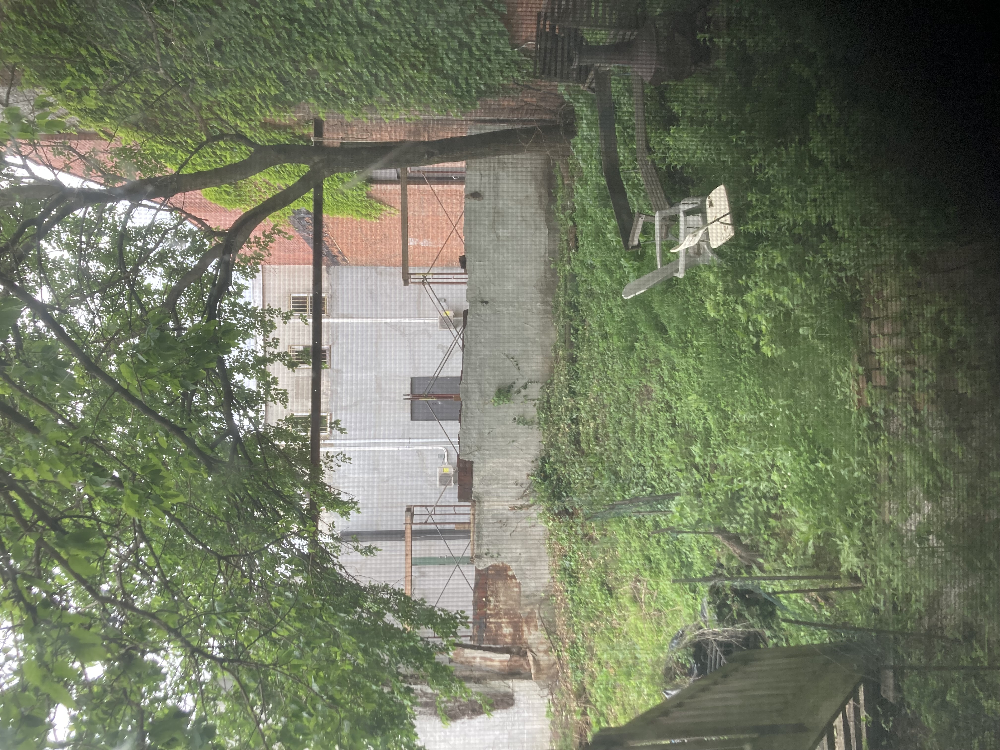

Ariel Yelen lives in Brooklyn and serves as the Associate Editor for Futurepoem,
where she also edits the blog futurefeed. Her work has been recognized by grants and fellowships
from Fine Arts Work Center, Vermont Studio Center, The Yiddish Book Center, Art Farm, and Arte Studio Ginestrelle.
She has taught poetry at Rutgers Mason Gross School of the Arts and the Loft Literary Center**
